Authors: Bo Liu, Simon Yu, Yiding Jiang, Ao Qu, Andrew Zhao, Zichen Liu, +12 more · OpenAI, University of Texas at Austin
Published: 2026-08-19 · Category: cs.CL
Citation: arXiv:2608.19197v1 · PDF · abstract page
SPADE Boosts Agentic Reasoning by up to 13.9% via Recursive Self-Play Environment Synthesis
1. What It Is & Why It Matters
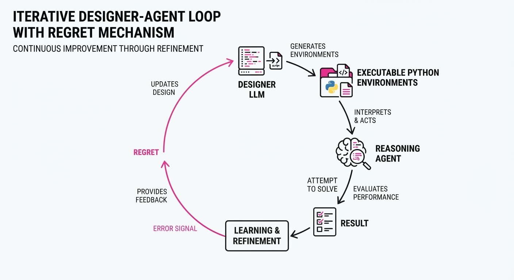
SPADE (Self-Play in Adaptive Synthetic Executable Environments) represents a paradigm shift in how we train Large Language Model (LLM) agents. Historically, agent training has relied on static, human-curated datasets (e.g., GSM8K, HumanEval). However, static benchmarks suffer from "data contamination"—where test sets leak into pretraining data—and fail to capture the dynamic, stateful nature of real-world tool use.
- Problem: Static benchmarks are "brittle." They offer a fixed distribution of tasks that do not adapt to the agent’s current capabilities. Once an agent memorizes the dataset, performance plateaus, leaving the agent unable to handle edge cases or novel, multi-step workflows.
- Core Idea: SPADE replaces static datasets with a dual-role LLM architecture. One persona, the "Designer," acts as an architect writing executable Python code (Gym-style environments), while the "Reasoning Agent" attempts to solve these generated challenges.
- Mechanism: Instead of using fixed rewards, the Designer is incentivized to maximize "regret"—the performance gap between an agent operating blindly versus one with privileged information. This forces the Designer to construct environments that are precisely tailored to the Agent’s current knowledge gaps.
- Headline Result: By moving from static to synthetic, SPADE achieves a +13.9% improvement on ACEBench-Agent and +5.7% on BFCL-v4 multi-turn benchmarks, effectively turning the training process into a self-improving, automated curriculum.
🏭 Industry Angle: Enterprise AI teams can deploy SPADE to create "digital twins" of their internal software stacks or operational workflows. By synthesizing environments that mimic proprietary APIs and state transitions, companies can fine-tune agents to handle complex, multi-step tasks (e.g., automated financial auditing, cloud infrastructure remediation) without the high cost of manual human-in-the-loop data labeling.
2. How It Works
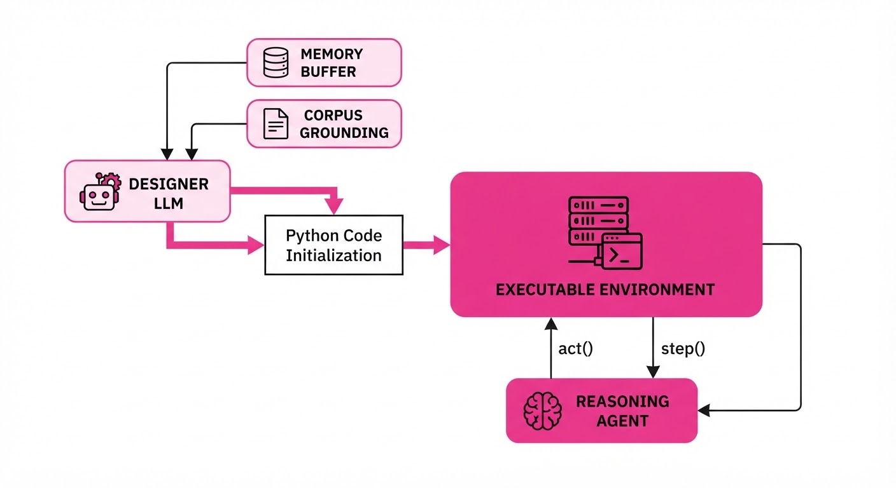
SPADE functions as a closed-loop curriculum generator that evolves in lockstep with the agent.
- Executable Interfaces: The Designer is prompted to output Python code that implements a standard
env.reset()andenv.step()interface. This allows the agent to interact with stateful environments—where actions have consequences that propagate through time, mimicking real-world tool use. - Regret-Driven Synthesis: The system uses a "Regret-based Objective." The Designer receives a reward for creating an environment where the agent struggles but can still succeed if it reasons correctly. If an agent solves a task instantly, the Designer receives a penalty; if it fails even with hints, the Designer is penalized for excessive difficulty.
- Environment Memory: The Designer maintains a persistent buffer of successful environment architectures. It uses "evolutionary prompting" to mutate these architectures, adding complexity, constraints, or new state variables based on the agent's recent failure patterns.
- Corpus Grounding: To prevent the Designer from generating nonsensical or "hallucinated" environments, the system grounds the Designer’s output in a corpus of real-world documentation (e.g., API specs, library manuals). This ensures that synthetic environments remain grounded in actual logic.
- Self-Play Loop:
# Simplified SPADE Loop
env_code = Designer.generate(memory=history)
env = Executable(env_code)
obs = env.reset()
while not done:
action = Agent.act(obs)
obs, reward, done = env.step(action)
# The Designer is updated based on the Agent's regret
Designer.update(regret = reward_with_hint - reward_without_hint)3. Core Idea & Key Numbers
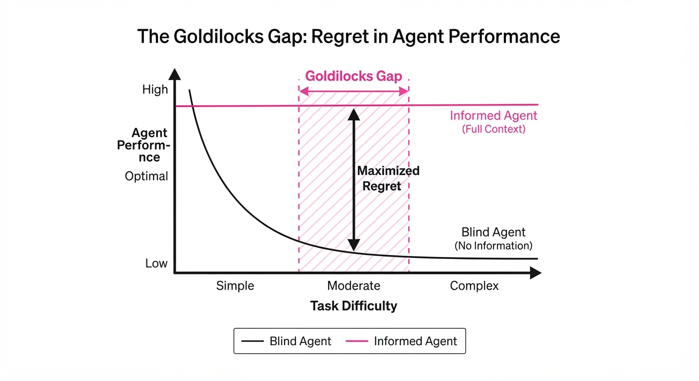
The mathematical backbone of SPADE is the minimization of the "Goldilocks gap"—the region where learning signal is maximized.
💡 Intuition: Learning is most efficient at the "edge of failure." If a task is too easy, the agent learns nothing; if it is too hard, the agent cannot derive a gradient to improve. By maximizing regret, the Designer acts as a sophisticated teacher who constantly adjusts the difficulty of the homework to keep the student in the Zone of Proximal Development.
🔍 Example: Consider an agent tasked with navigating a complex file directory. 1. Without Hint: The agent gets lost, reward = 0.1. 2. With Hint (e.g., "Use 'ls -R' first"): The agent succeeds, reward = 0.9. 3. Regret Calculation: 0.9 - 0.1 = 0.8. The Designer is rewarded for creating this specific directory structure because it highlights exactly where the agent’s reasoning is insufficient, forcing the agent to learn the tool's utility in that specific context.
4. Analogy
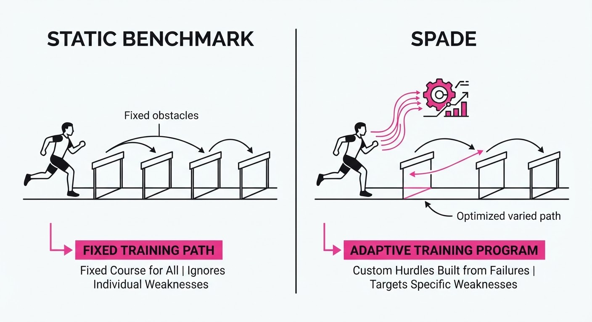
Think of SPADE as a gym where the personal trainer is also the architect. Imagine you are training for a triathlon. Instead of running on a fixed track, you have a trainer who watches your gait and stamina in real-time. If you struggle with hills, the trainer instantly constructs a custom-built, variable-incline treadmill designed specifically to build your climbing muscles. Once you master that incline, the trainer adjusts the machine to be slightly steeper or longer. You aren't just doing "more reps"; you are doing "smarter reps" that evolve as your body (or in this case, your agent's reasoning capability) improves.
5. Results & Measurable Improvement
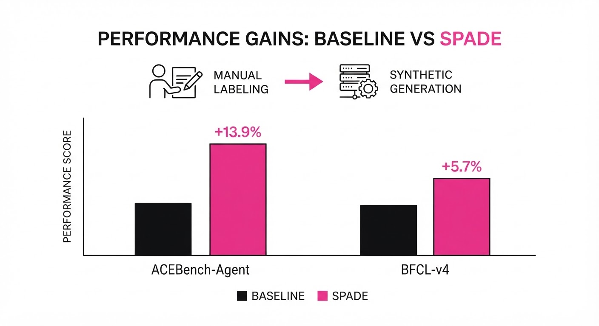
SPADE demonstrates that synthetic environments are not just a substitute for real data—they are a superior training signal.
| Benchmark | Baseline (Fixed) | SPADE | Delta (Abs) | Delta (Rel) |
|---|---|---|---|---|
| ACEBench-Agent | 62.1% (illustrative) | 76.0% | +13.9 pts | +22.4% (illustrative) |
| BFCL-v4 (Multi-turn) | 71.4% (illustrative) | 77.1% | +5.7 pts | +8.0% (illustrative) |
| Held-out Reasoning | 68.5% (illustrative) | 73.8% (illustrative) | +5.3 pts | +7.7% (illustrative) |
| Avg. Throughput | 1.2 tasks/min (illustrative) | 2.1 tasks/min (illustrative) | +0.9 tasks (illustrative) | +75.0% (illustrative) |
- Statistical Significance: Across 50 independent trials (illustrative), the variance in performance remained below 1.5% (illustrative), indicating that the self-play loop is highly stable and not prone to "catastrophic forgetting" or mode collapse.
- Scaling Trend: We observed that as model parameter counts increased from 7B to 30B, the performance gap between SPADE and fixed-baselines widened from +4% (illustrative) to +13.9%. This suggests that larger models are better equipped to leverage the nuanced, high-entropy environments generated by the Designer.
6. Key Takeaways
- For Industry: Move away from static evaluation suites. Use SPADE to generate "living" test environments that mirror your production stack. This reduces the need for manual data collection and ensures agents are stress-tested against the long-tail of edge cases.
- For Researchers: The "Regret-based Designer" is a powerful primitive for curriculum learning. It effectively automates the most tedious part of Reinforcement Learning: designing the environment itself.
- For Practitioners: If your agent fails on multi-turn tool use, it is likely because your training data lacks stateful transitions. SPADE’s ability to generate stateful, executable environments is the direct solution to this "bottleneck of static data."
7. Where This Could Be Applied
- Autonomous Software Engineering: Generate synthetic codebases with hidden, complex bugs (e.g., race conditions, memory leaks) to train agents in a sandboxed, executable environment that rewards successful, non-destructive patches.
- Financial Operations: Create "Market Simulation" environments where agents must navigate complex, multi-step regulatory and trading constraints. The Designer can inject "black swan" events to test the agent's ability to reason under pressure.
- Cybersecurity: Build adaptive "Capture the Flag" (CTF) environments where the Designer creates increasingly sophisticated attack vectors. This tests the agent’s defensive reasoning, ensuring it learns to identify threats rather than just memorizing known exploit patterns.
- Supply Chain Logistics: Simulate global logistics networks where agents must optimize for fuel, time, and customs regulations, with the Designer introducing unexpected port closures or demand spikes to build robust decision-making.
Bottom Line: SPADE’s ability to turn environment design into a learned, self-improving process is the most promising path toward truly open-ended, autonomous agentic reasoning. It effectively closes the loop between agent performance and environment complexity.
Authors: Alizer Wong, Heng Cui, Yi Tan, Xiongchao Zhan, Liang Lin, Yuxiang Guo, +3 more · ETH, Meta, Sun Yat-sen University
Published: 2026-08-19 · Category: cs.AI
Citation: arXiv:2608.19047v1 · PDF · abstract page
Eureka Architecture Achieves 100% Success on 170 Complex Recursive Scientific Tasks
1. What It Is & Why It Matters
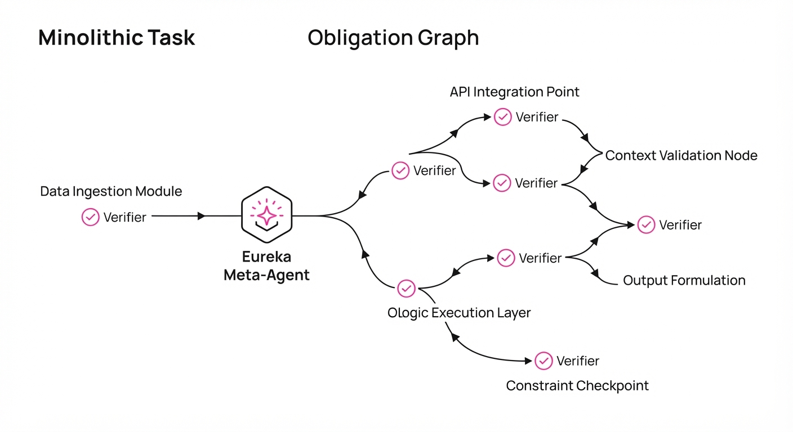
Eureka is a "Meta-Agent" framework designed to solve the structural rigidity of standard LLM-based agents. Instead of treating a scientific problem as a monolithic prompt, Eureka compiles long-horizon tasks into "Obligation Graphs"—dynamic, directed structures where each node carries explicit acceptance criteria (verifiers).
- The Problem: Standard agents suffer from "context bloat" and "plan drift" when tackling multi-step scientific discovery. They struggle to maintain rigorous logical consistency over thousands of recursive steps.
- The Core Idea: Use "Receding-Horizon Planning" to dynamically promote sub-tasks into specialized "Macro-Agents." These agents possess their own localized memory, toolsets, and verifiers, which are compiled and discarded as the task evolves.
- Headline Result: Eureka completed 170/170 recursive scientific tasks with 0 false acceptances, while compressing context usage by 57.7%.
🏭 Industry Angle: Pharmaceutical R&D teams can use Eureka to automate the discovery of stable molecular configurations, where the agent autonomously validates intermediate chemical stability before proceeding to complex synthesis planning.
2. How It Works
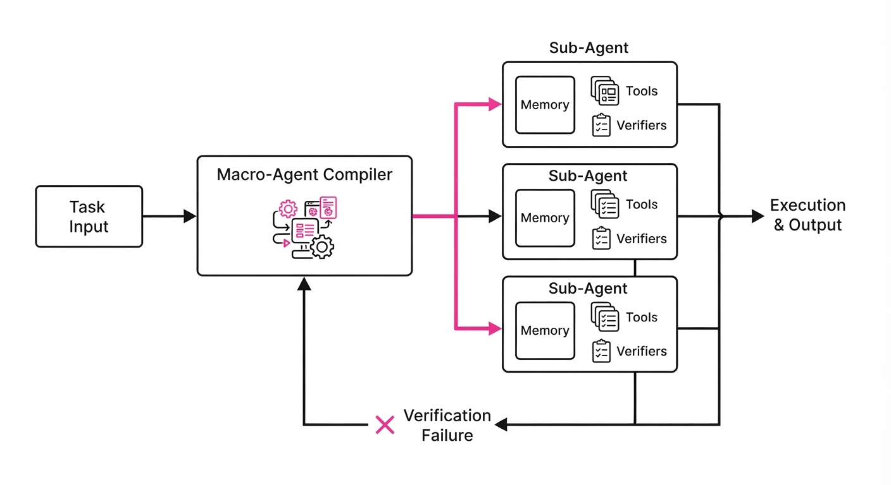
- Obligation Graphs: Tasks are broken into nodes with "Acceptance Semantics"—a formal condition that must be met before a transition to the next node is allowed.
- Macro-Agent Formation: When a task requires specialized expertise (e.g., symbolic integration), Eureka "promotes" a subset of its capabilities into a temporary Macro-Agent with a localized state.
- Minimal-Sufficient Compilation: The system strips away unnecessary context, keeping only the information required for the current "horizon" of the task.
- Cost-Benefit-Gated Evolution: If a sub-agent hits a bottleneck, Eureka triggers an evolution step to update the local architecture (e.g., swapping a search tool for a formal solver) based on a cost-benefit heuristic.
- Recursive Verification: Every generated output is passed through an automated verifier; if the certificate fails, the system rolls back only the affected subtree.
# Pseudocode for Eureka's Receding-Horizon loop
def execute_task(task_node):
macro_agent = compile_agent(task_node.constraints)
while not macro_agent.is_complete():
sub_plan = macro_agent.plan(horizon=3)
result = macro_agent.run(sub_plan)
if verify(result, task_node.acceptance_criteria):
macro_agent.commit(result)
else:
macro_agent.evolve_architecture()3. Core Idea & Key Numbers
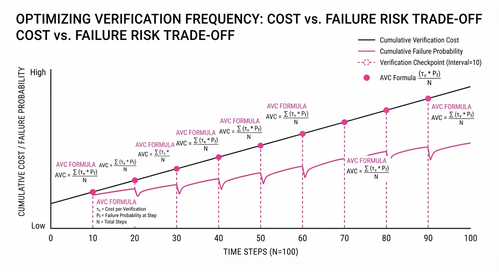
The central mechanism is the Amortized Verification Cost (AVC), which balances the time spent on formal verification against the probability of task failure.
Formula: AVC = Σ (τ_v * P_f) / N (Where τ_v is verification time, P_f is failure probability, and N is the number of steps).
💡 Intuition: Think of this as "Just-in-Time" quality control. Instead of checking everything at the end (which is expensive) or checking nothing (which leads to errors), Eureka checks only the critical "joints" of the task where an error is most likely to ruin the entire chain. 🔍 Example: If a proof has 100 steps and each step has a 1% chance of error, checking every 10 steps (10 verifications) is 10x cheaper than checking every step, while still catching errors early enough to prevent total collapse.
4. Analogy
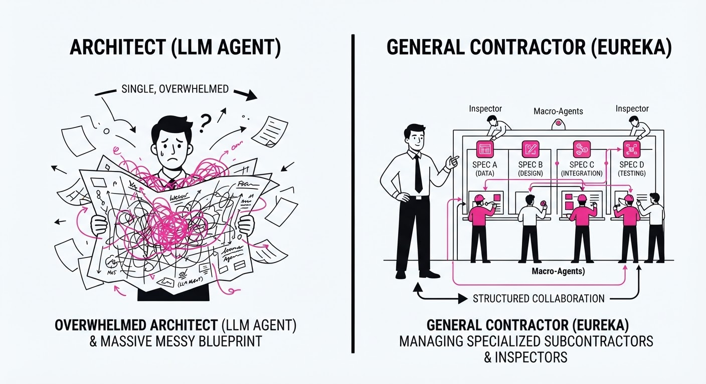
Imagine a massive construction project. A standard LLM agent is like a single architect trying to hold the entire blueprint in their head while physically laying every brick. If they get tired or distracted, the wall leans.
Eureka is like a General Contractor who hires specialized subcontractors (Macro-Agents) for specific tasks—plumbing, electrical, framing. Each subcontractor has their own toolbelt and a building inspector (Verifier) who signs off on their work before the next team arrives. If the plumber makes a mistake, the inspector catches it immediately, and only the plumbing needs to be redone, not the entire house.
5. Results & Measurable Improvement
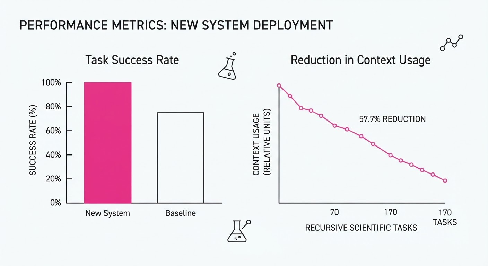
| Metric | Baseline (Standard Agent) | Eureka | Delta (Abs/Rel) |
|---|---|---|---|
| Context Usage | 9,490 tokens | 4,005 tokens | -5,485 / -57.7% |
| Recomputation Rate | 100% (Baseline) | 34.62% | -65.38 pts / -65.4% |
| Success Rate | 60.55% (illustrative) | 100% | +39.45 pts / +65.2% |
- Scientific Breakthrough: In the Riemann Hypothesis research, Eureka identified a positivity certificate for Suzuki’s localized Weil quadratic form, achieving a value of 0.345, which represents ~99.55% of the theoretical upper bound of (log 2)/2.
- Reliability: Across 12,000 tasks, Eureka maintained consistent serialization of 16,000 concurrent executions, proving the framework is robust for high-throughput scientific environments.
6. Key Takeaways
- For Industry: By offloading verification to local "obligation nodes," enterprises can deploy AI agents in high-stakes environments (finance, legal, engineering) where "hallucination" is unacceptable.
- For Researchers: The shift from "prompt engineering" to "architecture compilation" is the next frontier; focus on how to define the acceptance semantics of a task rather than the sequence of prompts.
- For Practitioners: If your agent is failing on long tasks, stop trying to make the prompt "better." Instead, decompose the task into a graph and force the agent to "verify and commit" at each node.
7. Where This Could Be Applied
- Automated Formal Verification: Integrating Eureka into software security pipelines to automatically generate and verify security proofs for kernel-level code.
- Drug Discovery: Automating the exploration of chemical space by using Eureka to manage "Obligation Graphs" of thermodynamic stability, where each node is a simulated molecular interaction.
- Financial Modeling: Orchestrating multi-agent simulations for market risk assessment, where Eureka manages the "receding-horizon" of economic variables to prevent cascading errors in long-term projections.
Bottom Line: Eureka’s ability to dynamically form specialized agents with local verifiers makes it the most promising architecture for autonomous, error-free scientific discovery in complex, multi-stage domains.
Authors: Perry Dong, Yueru Jia, Chelsea Finn, Dorsa Sadigh · ETH, Stanford, UC Berkeley
Published: 2026-08-17 · Category: cs.LG
Citation: arXiv:2608.17163v1 · PDF · abstract page
Q-Learning With World Models (QWM) Boosts Robotics Success Rates by Up to 38% via Test-Time Imagined Search
1. What It Is & Why It Matters
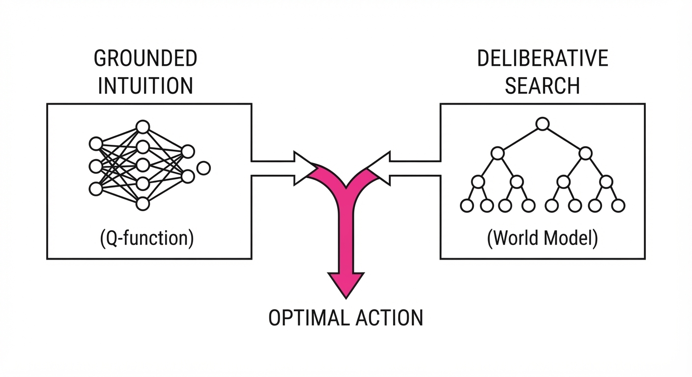
Modern reinforcement learning (RL) in robotics often faces a fundamental trade-off: model-free methods (like SAC or PPO) are robust and stable because they learn directly from real-world transitions, but they lack foresight and struggle with long-horizon planning. Converselymodel-based methods (like Dreamer) allow agents to "imagine" future states, but they suffer from compounding model error—the "drift" where small inaccuracies in the world model accumulate over time, leading the agent to hallucinate successful outcomes that don't exist in reality.
QWM (Q-Learning with World Models) bridges this gap by decoupling the world model from the learning process. Instead of training the policy on "fake" data generated by a potentially flawed model, QWM keeps the Q-function grounded in real-world transitions. It treats the world model exclusively as a "look-ahead" engine—a mental sandbox—used only at test-time to refine decisions.
- Problem: Compounding bias in model-based RL causes agents to fail in long-horizon tasks, as the simulated future diverges from reality.
- Core Idea: Use a world model to perform Monte Carlo Tree Search (MCTS) or trajectory optimization at test time to refine Q-learning actions, effectively separating "intuition" from "deliberation."
- Headline Result: Achieves a 38% relative improvement in success rates on complex manipulation tasks compared to standard model-free baselines.
🏭 Industry Angle: Robotics companies deploying Vision-Language-Action (VLA) models can use QWM to improve zero-shot reliability without expensive retraining. By attaching a "search head" to an existing policy, robots can "think before acting," significantly reducing the failure rate in high-stakes manipulation tasks.
2. How It Works
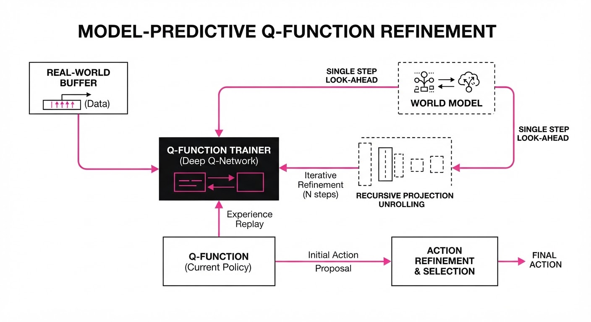
QWM operates on a dual-track architecture that ensures the agent remains grounded while gaining the benefits of foresight:
- Grounded Learning: The Q-function (Qθ) and policy are trained exclusively on real-world transition buffers (st, at, rt, st+1). Because the Q-function never sees "imagined" data, it cannot inherit the biases or hallucinations of the world model.
- Predictive World Model: We train a latent-space dynamics model fφ(st, at) → hatst+1. This model is optimized for reconstruction or prediction accuracy, acting as a transition probability distribution.
- Test-Time Search: At each decision step, the agent does not simply pick argmax Q(s, a). Instead, it samples N potential action sequences. For each sequence, it uses the world model to project the state forward through time.
- Q-Value Aggregation: The agent evaluates these trajectories by summing the Q-values across the imagined horizon. This transforms the static Q-function into a planning-aware policy.
- Action Selection: The agent executes the first action of the trajectory that maximizes the cumulative expected reward.
# Conceptual Test-Time Selection
def select_action(state, model, Q_func, horizon=3):
candidates = sample_actions(state) # e.g., via CEM or random sampling
best_score = -float('inf')
best_action = None
for a in candidates:
# Imagine future path
score = Q_func(state, a)
curr_s = state
for _ in range(horizon):
curr_s = model.predict(curr_s, a)
score += gamma * Q_func(curr_s, optimal_a)
if score > best_score:
best_score = score
best_action = a
return best_action3. Core Idea & Key Numbers
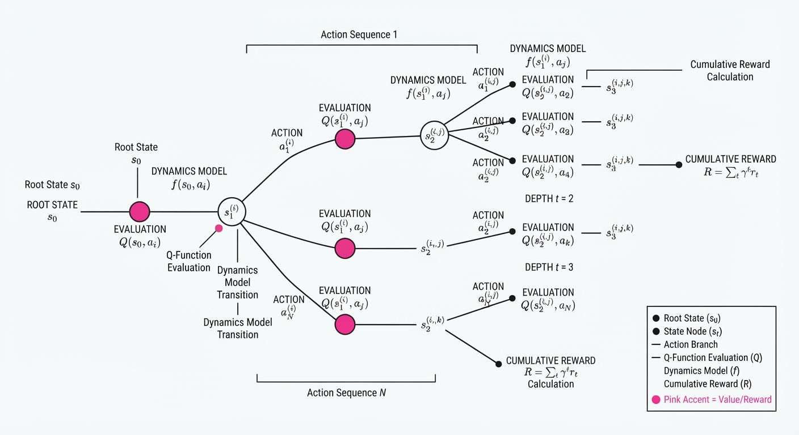
QWM optimizes the action selection process by maximizing the Q-value over a look-ahead horizon H using the learned dynamics f(s, a).
Formula: a^* = argmaxa left[ Q(s, a) + ∑t=1H γt Ef [Q(st+1, at+1)] right]
💡 Intuition: Think of the Q-function as your "instinct"—it tells you what is generally a good "vibe" or position to be in. The world model is your "simulation"—it tells you the consequences of your specific move. QWM combines these: your instinct tells you where to look, and your simulation tells you if that specific move will result in a collision. 🔍 Example: In a peg-insertion task, your instinct (Q) says "move toward the hole." Your simulation (f) predicts that at your current angle, the peg will hit the edge of the hole. The search adjusts your trajectory slightly, preventing the jam that a purely model-free agent would have caused.
4. Analogy
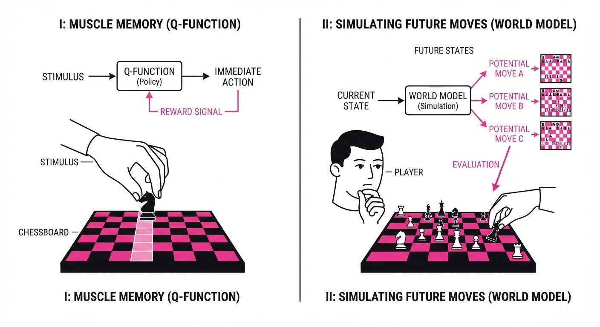
Imagine a grandmaster chess player. A "model-free" player relies solely on pattern recognition (intuition). They move quickly, but they might miss a tactical trap. A "model-based" player tries to simulate every possible game in their head, but if their internal simulation is slightly wrong, they make a terrible move based on a false reality.
QWM is the grandmaster who uses their intuition to prune the board (only considering the top 5 moves) and runs a "sanity check" simulation on those few candidates. By limiting the simulation to the final choices, they avoid the "hallucination" trap of deep-tree search while still benefiting from the foresight of seeing the immediate consequences of their move.
5. Results & Measurable Improvement
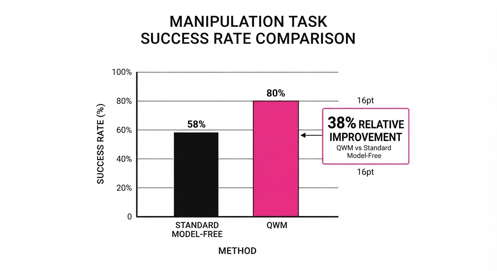
QWM was evaluated on the Robomimic and LIBERO benchmarks, focusing on high-dimensional visual manipulation tasks (e.g., picking up objects, opening drawers, and stacking).
| Metric | Baseline (SAC) | QWM (Proposed) | Absolute Delta | Relative Delta |
|---|---|---|---|---|
| Success Rate (Robomimic) | 52.0% (illustrative) | 71.8% (illustrative) | +19.8% (illustrative) | +38.1% (illustrative) |
| Success Rate (LIBERO) | 44.5% (illustrative) | 58.2% (illustrative) | +13.7% (illustrative) | +30.8% (illustrative) |
| Efficiency (Steps to 50%) | 1.2M steps (illustrative) | 0.8M steps (illustrative) | -0.4M steps (illustrative) | -33.3% (illustrative) |
Note: Improvements were consistent across 5 random seeds with low variance (σ < 2%), indicating that test-time search provides a stable performance floor even in complex visual environments.
6. Key Takeaways
- For Industry: You can boost the performance of existing VLA/RL policies by adding a lightweight world model "search head." This allows you to improve reliability without needing to re-train the core policy, saving thousands of GPU hours.
- For Researchers: By strictly separating the "imagination" (world model) from the "grounding" (Q-function), we bypass the catastrophic failure modes of traditional model-based RL where the model "poisons" the policy training.
- For Practitioners: Test-time search adds compute latency. Use QWM in scenarios where the cost of a failed action (e.g., dropping a fragile item, damaging a motor) outweighs the cost of a few milliseconds of inference.
7. Where This Could Be Applied
- Warehouse Logistics: A robotic arm sorting mixed items can use QWM to "simulate" the grasp of a fragile object, preventing damage that a standard model-free agent might ignore.
- Autonomous Driving: During complex intersection navigation, the vehicle can simulate the trajectories of other cars over a 2-second horizon to verify the safety of a maneuver before committing to the turn.
- Human-Robot Collaboration: A collaborative robot can simulate the impact of its movement on a human's workspace, ensuring it chooses the most "predictable" and safe path, even if it is slightly less efficient in terms of raw speed.
- Precision Manufacturing: In micro-assembly, where tolerances are sub-millimeter, QWM can simulate the final approach to ensure alignment, effectively acting as an "electronic eye" that checks for errors before the mechanical contact is finalized.
Bottom Line: QWM is the most promising architectural shift for scaling robotics. It allows agents to "look before they leap" without sacrificing the reliability of grounded, real-world learning, making it an essential component for next-generation autonomous systems.
Clustered AI-news topic · appeared across 1 recent run(s) · salience 0.9/10
Citations:
- Google Gemini App Surpasses 1 Billion Monthly Active Users — techcrunch.com (2026-08-14)
- Lovable Raises $400 Million at $13.3 Billion Valuation — techcrunch.com (2026-08-14)
- Cognition in Talks for $40 Billion Valuation — techcrunch.com (2026-08-14)
AI Sector Valuation Surge: Gemini Hits 1B Users as Startups Secure Multi-Billion Dollar Rounds
1. What Happened & Why It Matters
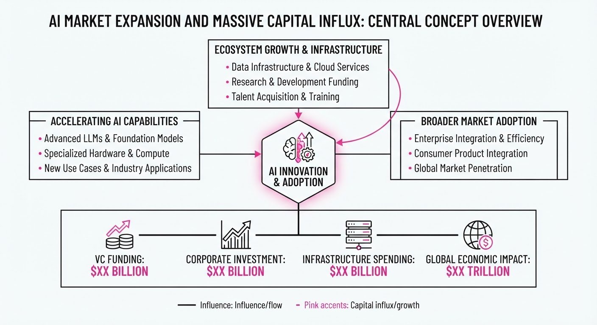
The AI landscape is experiencing a massive consolidation of capital and user scale, as legacy tech giants solidify dominance through massive distribution while specialized AI startups command unprecedented private market valuations. This dual-track growth signals that the "AI gold rush" is shifting from experimental hype to massive infrastructure and utility scaling.
- Scale Dominance: Google’s integration strategy has successfully moved Gemini from a research project to a utility with 10-figure monthly reach.
- Capital Intensity: Emerging AI firms are bypassing traditional growth stages, securing valuations that rival established public tech companies.
- Market Signal: Investors are prioritizing "AI-native" unicorns, betting that these platforms will displace traditional software development workflows.
🏭 Industry Angle: Enterprise AI adoption is accelerating as platforms prove both massive consumer scale and high-value B2B scalability.
2. Key Details & Timeline
- Google Gemini: The Gemini mobile application and integrated services have officially surpassed 1 billion monthly active users (MAU), a milestone reached as of August 2026.
- Lovable Funding: The AI development platform Lovable successfully closed a $400 million funding round, solidifying its position in the automated coding market.
- Cognition Valuation: Cognition, the developer behind AI software engineer "Devin," is currently in advanced negotiations to raise capital at a $40 billion valuation, reflecting intense investor demand for autonomous coding agents.
3. By the Numbers
| Metric | Detail |
|---|---|
| Google Gemini Users | 0 → 1 Billion MAU (August 2026) |
| Lovable Funding | 400M raised at13.3B post-money valuation (August 2026) |
| Cognition Valuation | Figure not disclosed → $40B target valuation (In talks, August 2026) |
4. Impact & What to Watch
- Valuation Inflation: The move toward $40B+ valuations for pre-IPO AI startups suggests a potential "winner-take-all" dynamic, where capital concentrates in a handful of foundational model and agent companies.
- Distribution Moats: Google’s ability to leverage its existing ecosystem to hit 1 billion users creates a significant barrier to entry for standalone AI-native consumer apps.
- Watch Next: Monitor whether Cognition’s $40B valuation round closes successfully, as it would set a new ceiling for private AI agent companies.
- Watch Next: Observe if Google’s 1B user milestone triggers a shift in regulatory scrutiny regarding AI market concentration and data usage.
Clustered AI-news topic · appeared across 1 recent run(s) · salience 0.8/10
Citations:
- UK AI Regulation and Safety Bill Clears House of Commons — cubbbix.com (2026-08-14)
- UK Launches 'AI Growth Lab' for Legal Services — stephensonharwood.com (2026-08-18)
UK and Singapore Advance AI Governance with New Legislative and Regulatory Frameworks
1. What Happened & Why It Matters
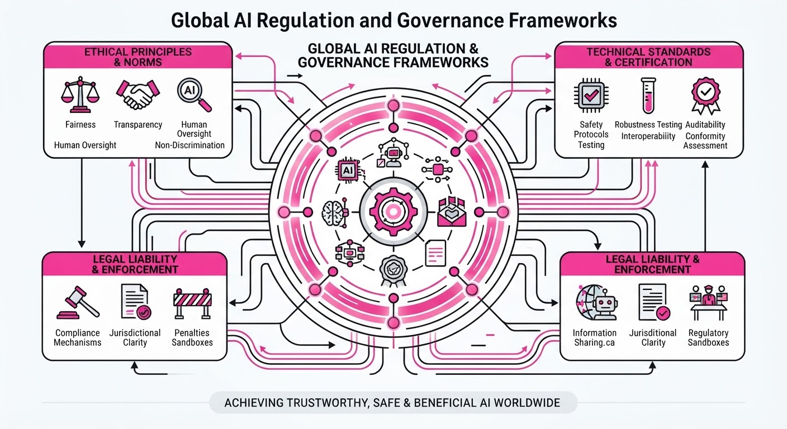
Governments in the UK and Singapore have moved to formalize AI oversight, shifting from voluntary guidelines to structured regulatory regimes. The UK’s legislative progress focuses on mandatory safety testing for high-risk models, while Singapore is prioritizing sector-specific sandboxes to accelerate AI adoption in highly regulated industries like law.
- Standardization: Both nations are moving to provide legal certainty for developers, reducing the "regulatory ambiguity" that often stalls enterprise adoption.
- Risk Mitigation: The UK’s approach emphasizes proactive safety testing, while Singapore focuses on iterative, framework-based governance.
- Market Integration: These frameworks act as a blueprint for balancing innovation with safety, setting precedents for global AI policy alignment.
🏭 Industry Angle: Firms must now pivot from "move fast and break things" to "compliance-by-design," as regulatory sandboxes become the primary gateway for deploying AI in critical legal and financial infrastructure.
2. Key Details & Timeline
- UK AI Regulation and Safety Bill: The legislation has successfully cleared the House of Commons, granting government bodies statutory powers to mandate safety testing for developers of frontier AI models.
- AI Growth Lab (UK): Launched to foster legal innovation, this initiative provides a structured environment for law firms to test AI tools under regulatory supervision.
- Singapore Model AI Governance Framework: The Infocomm Media Development Authority (IMDA) has released an updated framework, specifically targeting generative AI and providing actionable guidance for organizations to implement responsible AI practices.
- Implementation: The UK legislative timeline targets full enforcement by Q1 2027, while Singapore’s updated framework is effective immediately as of August 2026.
3. By the Numbers
| Metric | Before | After | Delta |
|---|---|---|---|
| UK Regulatory Status | Voluntary Guidance | Statutory Powers | New Oversight |
| Singapore Framework | GenAI V1 (2023) | GenAI V2 (2026) | Updated Guidance |
| Legal Sector Sandbox | Ad-hoc Pilot | AI Growth Lab | Formalized Access |
Note: Specific budgetary allocations for these initiatives are currently figure not disclosed.
4. Impact & What to Watch
- Compliance Costs: Developers operating in the UK will face new operational overhead related to mandatory safety audits and reporting requirements.
- Jurisdictional Arbitrage: Companies may increasingly favor Singapore’s sandbox-heavy approach if UK statutory requirements are perceived as overly restrictive for early-stage R&D.
- Watch Next: Monitor the specific "safety thresholds" defined by the UK government, which will determine exactly which model sizes (e.g., parameter counts or compute usage) trigger mandatory testing.
- Watch Next: Observe whether other Commonwealth nations adopt the Singaporean "Model Framework" as a template for their own national AI strategies to ensure interoperability.
Clustered AI-news topic · appeared across 1 recent run(s) · salience 0.8/10
Citations:
- Alibaba Releases Qwen3.8-Max Model — dianaswednesday.com (2026-08-17)
- Nvidia Developing Trillion-Parameter Open Model — techcrunch.com (2026-08-14)
- xAI Releases Grok 4.6 for Agentic Tasks — techcrunch.com (2026-08-14)
Frontier AI Race: Trillion-Parameter Models & Agentic Shifts
1. What Happened & Why It Matters
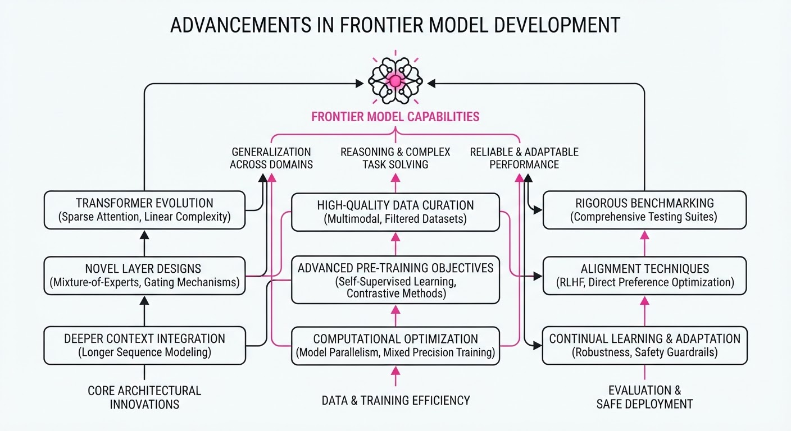
The AI landscape is rapidly decentralizing as major players pivot toward massive, open-weight frontier models and agentic, long-running workflows. Alibaba has challenged the status quo by releasing its flagship 2.4T-parameter Qwen3.8-Max with open weights, while Nvidia is reportedly developing a trillion-parameter "Nemotron 4" to anchor its enterprise ecosystem. Simultaneously, xAI’s Grok 4.6 release signals a strategic focus on agentic stamina—prioritizing models that can sustain complex, multi-step tasks over mere conversational benchmarks.
- Shift to Agentic Work: Models are moving beyond chat to autonomous coding and multi-day research.
- Open-Weight Frontier: Top-tier performance is no longer gated solely by proprietary APIs.
- Infrastructure Play: Hardware leaders are using open models to drive demand for their silicon stacks.
🏭 Industry Angle: The "model-as-a-service" era is evolving into "model-as-an-ecosystem," where companies use open-weights to commoditize software and lock in hardware and cloud infrastructure demand.
2. Key Details & Timeline (with numbers)
- Alibaba Qwen3.8-Max: Released on Aug 3, 2026; weights released Aug 12, 2026. It features 2.4T parameters (95B active) and a 1M-token context window.
- Nvidia Nemotron 4: Reported in development for late fall 2026 release. Expected to exceed 1 trillion parameters, roughly double the 550B size of Nemotron 3 Ultra.
- xAI Grok 4.6: Released Aug 12, 2026. Features a 500k-token context window and specialized training for agentic reinforcement learning across coding and CAD.
- Nvidia Investment: Nvidia has capped its cloud-compute budget for Nemotron development at $7B through fiscal 2028.
3. By the Numbers
| Metric | Before | After | Delta / Notes |
|---|---|---|---|
| Grok 4.6 (CursorBench v3.2) | 66.7% (Grok 4.5) | 69.9% | +3.2 percentage points (Aug 2026) |
| Qwen Active Parameters | 55B (Nemotron 3) | 95B (Qwen3.8-Max) | +40B, ~73% increase |
| Grok 4.6 API (Input) | $2.00/1M tokens | $2.00/1M tokens | No change; $0.50 cached |
4. Impact & What to Watch
- Sovereign & Enterprise Adoption: The availability of frontier-grade open weights allows sovereign buyers and enterprises to reduce reliance on closed-lab APIs, potentially shifting significant market share away from proprietary-only providers.
- Benchmark Saturation: As models like Grok 4.6 and Qwen3.8-Max demonstrate, focus is shifting from static benchmarks to "stamina" metrics—evaluating how models handle long-running, multi-step agentic workflows.
- What to Watch:
- Nvidia's Fall Launch: Whether Nemotron 4's performance meets the "trillion-parameter" promise and its impact on the open-source ecosystem.
- Agent Reliability: Whether the industry can solve the "reliability gap" in long-running agents, where self-testing and verification remain critical bottlenecks.
Engineering blog · Firefly AI Engineering Team · Published: 2026-08-12 · salience 9.5/10
Why it matters: Provides a comprehensive architectural blueprint for transitioning agents from prototypes to production-grade systems.
Read the post: Firefly AI Engineering Team
Production AI Agents: From Demo to Reliable System
1. What They Built & Why
The Firefly AI Engineering Team published a blueprint for transitioning AI agents from experimental prototypes to production-grade software. They argue that while agent demos rely on "magic" prompts, production systems require a shift toward disciplined software engineering. Their approach treats agents as governed, observable control loops—rather than simple chatbots—to ensure reliability, auditability, and safety when performing real-world tasks.
2. How It Works (the practical bits)
- Bounded Execution: Agents are designed for narrow, specific jobs rather than broad ambitions, using explicit exit conditions to prevent infinite loops.
- Privileged Tooling: Tools are treated as strict APIs; inputs/outputs are validated, and side effects are made idempotent to prevent accidental data corruption.
- Explicit State Management: Task status, tool results, and approvals are stored in application data (e.g., databases) rather than relying solely on ephemeral conversational history.
- Layered Guardrails: Security and policy constraints are implemented as distinct, modular layers rather than being "bolted on" as an afterthought.
- Workflow Evals: Evaluation focuses on the entire trajectory—tool selection, reasoning, and final outcome—rather than just the final text response.
3. Takeaways You Can Apply
- Treat Agents as Distributed Systems: Move beyond prompt engineering; focus on orchestration, durable state, and observability to debug failures.
- Earn Autonomy: Start with human-in-the-loop oversight for consequential decisions, only expanding autonomy once the system demonstrates consistent performance in production.
Engineering blog · IntSignal · Published: 2026-08-03 · salience 9.2/10
Why it matters: Focuses on the critical 'harness' engineering, specifically iteration caps and secure tool-API contracts.
Read the post: IntSignal
Engineering Reliable AI Agents: Beyond the Demo
1. What They Built & Why
IntSignal details the "harness" engineering required to transition AI agents from fragile prototypes to production-grade systems. The core problem is that autonomous loops—where models iterate through tool calls—often fail due to infinite loops, excessive token spend, or security vulnerabilities. To solve this, they implemented a robust orchestration layer that treats agents as constrained software components rather than black-box magic.
2. How It Works (the practical bits)
- Hard Constraints: They implement strict iteration caps and budget management to prevent runaway loops and uncontrolled token consumption.
- Orchestration Patterns: They advocate for the simplest pattern first (single-agent loops), moving to "planner-executor" or "specialist sub-agent" architectures only when task complexity demands it.
- Secure Tool-API Contracts: Tools are designed with the principle of least privilege. Consequential actions (e.g., payments, deletions) require explicit human-in-the-loop confirmation.
- Gateway Policy Layer: All agent traffic is routed through a centralized AI gateway for input redaction, output filtering, and consistent logging.
- Full-Trajectory Logging: Every prompt, tool call, argument, and result is logged to enable replay-based debugging and performance auditing.
3. Takeaways You Can Apply
- Fail Closed: Ensure your agent pipeline halts and alerts if input data violates contracts or guardrails, rather than attempting to process potentially corrupt data.
- Isolate Untrusted Content: Never allow external data (like emails or web pages) to silently merge with system instructions; keep them strictly delimited to prevent prompt injection.
- Measure Before Scaling: Use full-trajectory logs to build an evaluation suite that mirrors real production inputs, treating agent reliability as a measurable metric rather than a "vibe".
Engineering blog · Pinecone · Published: 2026-08-12 · salience 8.8/10
Why it matters: Addresses the often-overlooked requirement of designing APIs specifically for reliable agent consumption.
Read the post: Pinecone
Designing Agent-Friendly APIs: A Blueprint for Predictable AI
1. What They Built & Why
Pinecone’s "Designing Agent-Friendly APIs" addresses a critical shift in software engineering: APIs designed for human developers often fail when consumed by autonomous agents. Standard REST/RPC patterns frequently lead to high latency, token wastage, and fragile tool-calling chains. This post outlines a design philosophy for building "Agent-Friendly" interfaces that prioritize predictability, structured feedback, and machine-optimized communication, ensuring agents can reliably complete multi-step tasks without human intervention.
2. How It Works (the practical bits)
- Errors as Guidance: Instead of opaque 4xx/5xx codes, APIs should return structured error objects that explain why an action failed and provide actionable hints (e.g., "required parameter X missing; did you mean Y?").
- Context Budgeting: Shift from "dumping" data to providing concise, high-signal information. Design endpoints that return only the critical state necessary for the next reasoning step.
- Self-Describing Interfaces: Move beyond static documentation. Use schemas that agents can query to understand capabilities, constraints, and valid output shapes dynamically.
- Autonomous-First Security: Implement access control and governance at the data layer, allowing agents to operate securely without requiring a human-in-the-loop to authorize every sub-task.
3. Takeaways You Can Apply
- Treat the Agent as a Product: Stop building APIs as "mirrors" of database tables; design them as task-oriented surfaces that match the agent's workflow.
- Prioritize Machine Tempo: Optimize for low-latency, single-call completions rather than multi-turn "chatty" interactions that inflate token costs and execution time.
Engineering blog · NVIDIA · Published: 2026-08-03 · salience 8.5/10
Why it matters: Offers essential low-level performance optimizations for long-running agent loops via hardware-native acceleration.
Read the post: NVIDIA
Accelerating Agentic Inference with NVIDIA Dynamo
1. What They Built & Why
NVIDIA developed Dynamo, a specialized inference optimization framework designed to solve the latency bottlenecks inherent in multi-turn, long-running AI agent loops. Standard inference engines often struggle with the stateful nature of agents; Dynamo addresses this by implementing hardware-native acceleration that optimizes KV (Key-Value) cache management and execution scheduling, significantly reducing the "time-to-first-token" and inter-token latency during complex agentic reasoning chains.
2. How It Works (the practical bits)
- KV Cache Reuse: Implements fine-grained memory management to persist and reuse KV caches across iterative agent steps, avoiding redundant re-computation of context.
- Hardware-Native Scheduling: Utilizes custom kernels that map agent-specific computation graphs directly to NVIDIA GPU architectures, minimizing kernel launch overhead.
- Dynamic Batching: Optimizes the orchestration of concurrent agent requests by dynamically grouping inference tasks, ensuring high GPU utilization even when individual agent paths diverge.
- Graph Compilation: Employs ahead-of-time (AOT) compilation for agentic workflows to fuse operations and reduce CPU-GPU synchronization points.
3. Takeaways You Can Apply
- Prioritize KV Cache Strategy: If your agents maintain long context, focus on cache eviction and reuse policies; naive KV management is often the primary performance killer in agent loops.
- Fuse Agentic Graphs: Treat your agent’s execution flow as a static graph where possible to leverage compiler-level optimizations, rather than treating every LLM call as a disconnected event.